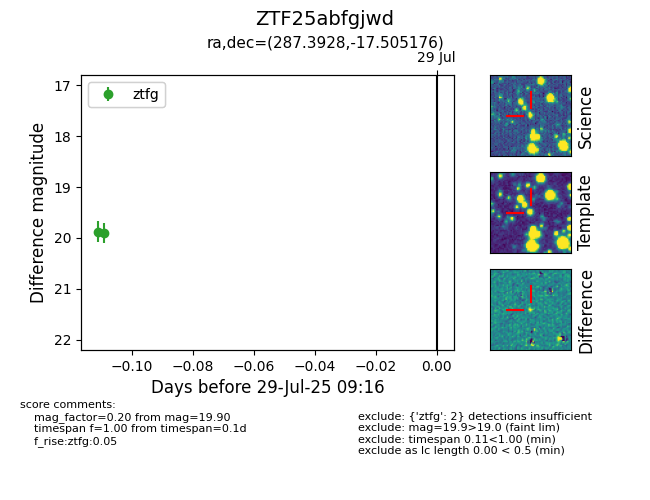

Target ZTF25abfgjwd at 2025-07-29 09:16, see:
FINK: fink-portal.org/ZTF25abfgjwd
Lasair: lasair-ztf.lsst.ac.uk/objects/ZTF25abfgjwd
ALeRCE: alerce.online/object/ZTF25abfgjwd
alt names
ZTF25abfgjwd (ztf,fink)
coordinates:
equatorial (ra, dec) = (287.3928,-17.50518)
galactic (l, b) = (19.1425,-11.78515)
photometry
last ztfg=19.90
2 ztfg detections
